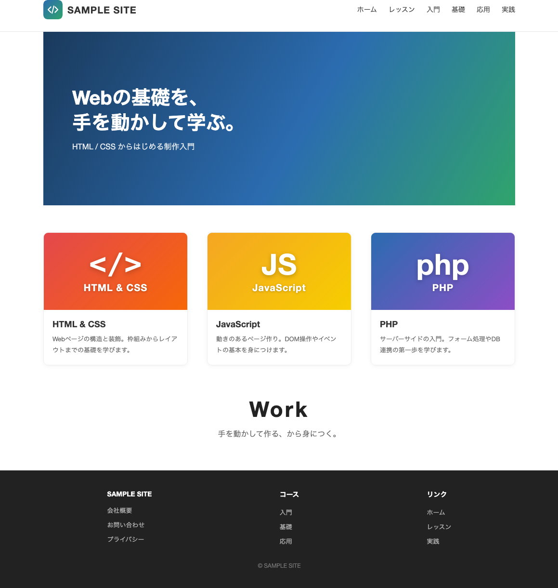

目次
1. 完成したレイアウトを拡張する
前回までで、ヘッダー・メインビジュアル（ヒーロー）・フッターという基本のレイアウトが完成しました。ここで「メインビジュアル」と「ヒーロー」は同じ大きな見せ場のことを指す、2つの呼び方です。ここからは、その完成したレイアウトを土台にして、実際のWebサイトに近い形へ拡張していきます。
すでにある枠組みを壊さずに、部品を足していくのがこの回のテーマです。今回は次の3つを追加します。
3つの拡張目標
- ヘッダーにナビゲーションを追加する（メニューのリンクを横並びにする）
- コンテンツ内容を増やす（レッスンカードとキャッチコピーを追加する）
- フッターにリンク集を追加する（複数カラムのリンクを並べる）
新しいページをゼロから作り直すのではなく、完成したレイアウトに部品を足していくのがポイントです。これまで学んだ枠（div）・見出し・flex での横並びを組み合わせるだけで、ぐっと本格的なサイトになります。
この回で完成する見本サイトのブランド名は「SAMPLE SITE」です。ロゴやリンク文言は自由に自分のサイト名へ置き換えて構いません。
2. 素材画像を準備する
拡張したサイトでは、ロゴやレッスンカードのサムネイルなどの画像を表示します。実際の制作では、画像素材をプロジェクト内の images フォルダにまとめて置きます。
この回で作る見本サイトでは、ヘッダーのロゴ logo_mark.svg と、レッスンカードのサムネイル3枚（HTML & CSS / JavaScript / PHP）を、いずれも実際の画像ファイルとして使います。まずは下のボタンからこれらの画像をダウンロードし、展開して出てきた images フォルダを index.html と同じ場所に置きましょう。
images.zip をダウンロード ロゴ・カードのサムネイル画像の素材一式
フォルダ構成
これまでの index.html と css/style.css に加えて、画像をまとめる images フォルダを用意し、その中にロゴ画像とカードのサムネイル画像を置きます。
mysite/
├── index.html
├── css/
│ └── style.css
└── images/
├── logo_mark.svg ← ロゴ画像
├── card_html.png ← レッスンカード（HTML & CSS）
├── card_js.png ← レッスンカード（JavaScript）
└── card_php.png ← レッスンカード（PHP）画像を
images フォルダに入れたら、HTML から呼び出すときのパスに注意します。index.html と同じ階層に images フォルダがある場合、<img src="images/ファイル名"> のように書きます。ファイル名やスペルが1文字でも違うと画像は表示されません。
3. 完成コードと表示イメージ
1章で挙げた3つの拡張 ―― ヘッダーのナビゲーション・レッスンカードとキャッチコピー・フッターのリンク集 ―― をすべて反映すると、拡張版のサイトが完成します。以下の index.html と css/style.css の全体を、どこに何が追加されたかを確認しながら読み進めましょう。基本はこれまでと同じ「枠（div）を作って flex で並べる」の繰り返しです。
index.html（全体）
1 2 3 4 5 6 7 8 9 10 11 12 13 14 15 16 17 18 19 20 21 22 23 24 25 26 27 28 29 30 31 32 33 34 35 36 37 38 39 40 41 42 43 44 45 46 47 48 49 50 51 52 53 54 55 56 57 58 59 60 61 62 63 64 65 66 67 68 69 70 71 72 73 74 75 76 77 78 79 80 81 82 83 84 85 86 87 88 89 90 91 92 93 94 95 96
<!DOCTYPE html> <html lang="ja"> <head> <meta charset="UTF-8"> <meta name="viewport" content="width=device-width, initial-scale=1.0"> <title>SAMPLE SITE</title> <link href="css/style.css" rel="stylesheet"> </head> <body> <!-- ヘッダー：全幅＋ナビ --> <div class="header"> <div class="header_contents"> <div class="logo"> <img class="mark" src="images/logo_mark.svg" alt="" width="40" height="40"> <div class="name">SAMPLE SITE</div> </div> <nav class="nav"> <ul> <li><a href="#">ホーム</a></li> <li><a href="#">レッスン</a></li> <li><a href="#">入門</a></li> <li><a href="#">基礎</a></li> <li><a href="#">応用</a></li> <li><a href="#">実践</a></li> </ul> </nav> </div> </div> <div class="contents"> <div class="visual"> <div class="copy"> <h1>Webの基礎を、<br>手を動かして学ぶ。</h1> <p>HTML / CSS からはじめる制作入門</p> </div> </div> <!-- コンテンツ追加 --> <div class="lessons"> <div class="card"> <img class="thumb" src="images/card_html.png" alt="HTML & CSS"> <div class="body"><h3>HTML & CSS</h3> <p>Webページの構造と装飾。枠組みからレイアウトまでの基礎を学びます。</p></div> </div> <div class="card"> <img class="thumb" src="images/card_js.png" alt="JavaScript"> <div class="body"><h3>JavaScript</h3> <p>動きのあるページ作り。DOM操作やイベントの基本を身につけます。</p></div> </div> <div class="card"> <img class="thumb" src="images/card_php.png" alt="PHP"> <div class="body"><h3>PHP</h3> <p>サーバーサイドの入門。フォーム処理やDB連携の第一歩を学びます。</p></div> </div> </div> <div class="catchcopy"> <h2>Work</h2> <p>手を動かして作る、から身につく。</p> </div> </div> <!-- リンク集追加 --> <div class="footer"> <div class="footer_contents"> <div class="col"> <h4>SAMPLE SITE</h4> <ul> <li><a href="#">会社概要</a></li> <li><a href="#">お問い合わせ</a></li> <li><a href="#">プライバシー</a></li> </ul> </div> <div class="col"> <h4>コース</h4> <ul> <li><a href="#">入門</a></li> <li><a href="#">基礎</a></li> <li><a href="#">応用</a></li> </ul> </div> <div class="col"> <h4>リンク</h4> <ul> <li><a href="#">ホーム</a></li> <li><a href="#">レッスン</a></li> <li><a href="#">実践</a></li> </ul> </div> </div> <div class="copyright">© SAMPLE SITE</div> </div> </body> </html>
css/style.css（全体）
1 2 3 4 5 6 7 8 9 10 11 12 13 14 15 16 17 18 19 20 21 22 23 24 25 26 27 28 29 30 31 32 33 34 35 36 37 38 39 40 41 42 43 44 45 46 47 48 49 50 51 52 53 54 55 56 57 58 59 60 61 62 63
* { box-sizing: border-box; margin: 0; padding: 0; }
body {
font-family: "Helvetica Neue", Arial, "Hiragino Sans", Meiryo, sans-serif;
color: #333;
background: #fff;
}
a { color: inherit; text-decoration: none; }
ul { list-style: none; }
.header_contents, .contents, .footer_contents { width: 980px; margin: 0 auto; }
/* ヘッダー：全幅（下線が画面端まで）／中身は header_contents で中央寄せ、ロゴ＋ナビ */
.header { border-bottom: 1px solid #e5e7eb; }
.header_contents {
height: 90px;
display: flex;
align-items: center;
justify-content: space-between;
}
.logo { display: flex; align-items: center; }
.logo .mark { width: 40px; height: 40px; border-radius: 8px; margin-right: 10px; }
.logo .name { font-size: 20px; font-weight: bold; letter-spacing: 1px; }
.nav ul { display: flex; }
.nav li { margin-left: 24px; font-size: 14px; }
.nav li:hover { color: #2b6cb0; }
/* ビジュアル（ヒーロー） */
.visual { height: 360px; margin-bottom: 56px;
background: linear-gradient(120deg, #1a3a5c 0%, #2b6cb0 55%, #30a46c 100%);
display: flex; align-items: center; }
.visual .copy { color: #fff; padding-left: 60px; }
.visual .copy h1 { font-size: 40px; line-height: 1.3; }
.visual .copy p { font-size: 16px; margin-top: 12px; opacity: .9; }
/* レッスンカード×3（flex） */
.lessons { display: flex; justify-content: space-between; margin-bottom: 64px; }
.card { width: 300px; border: 1px solid #eee; border-radius: 10px; overflow: hidden;
box-shadow: 0 2px 10px rgba(0,0,0,.05); }
.card .thumb {
width: 100%; height: 160px;
object-fit: cover; /* 画像を枠に合わせて表示 */
display: block;
}
.card .body { padding: 18px; }
.card .body h3 { font-size: 18px; margin-bottom: 8px; }
.card .body p { font-size: 13px; color: #666; line-height: 1.8; }
/* catchcopy */
.catchcopy { text-align: center; margin-bottom: 64px; }
.catchcopy h2 { font-size: 44px; letter-spacing: 4px; color: #222; }
.catchcopy p { margin-top: 12px; color: #666; }
/* フッター（カラム） */
.footer { background: #222; color: #bbb; padding: 40px 0; }
.footer_contents { display: flex; justify-content: space-around; }
.footer .col h4 { color: #fff; font-size: 14px; margin-bottom: 12px; }
.footer .col li { font-size: 13px; padding: 5px 0; }
.footer .copyright {
text-align: center;
font-size: 12px;
margin-top: 28px;
color: #777;
}完成イメージ
すべてを組み合わせると、次のような1ページになります。ヘッダーのナビ、メインビジュアル、3枚のレッスンカード、キャッチコピー「Work」、3カラムのフッターがすべてそろっています。

今回追加した部品は、どれも「枠を作って（div）、flex で並べる」の繰り返しです。ナビ・カード・フッターと、見た目は違っても仕組みは同じです。これまで学んだ基本の組み合わせだけで、本格的なレイアウトが作れることを確認しましょう。